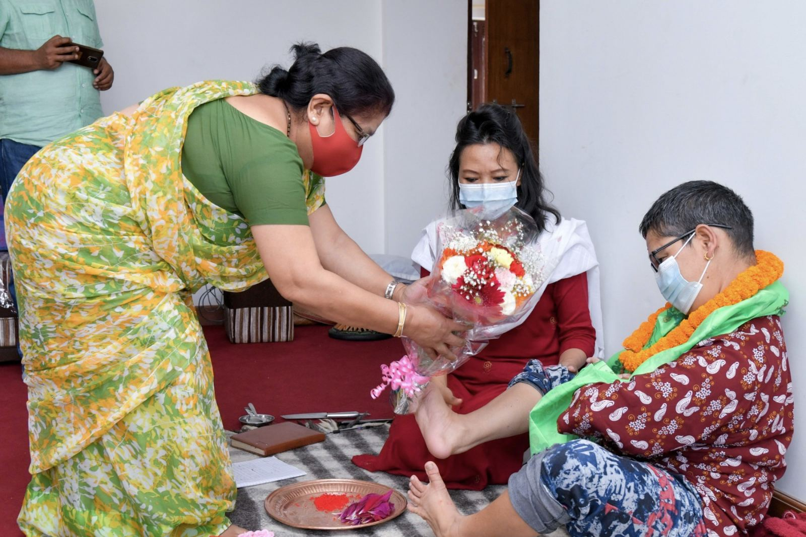

एउटा औंसीको मध्यम साँभफ् ।
मलाई थाहा छ बुवालाई एन्जाइटी डिसअर्डर छ । तर बुवाको अर्डर नमान्नु भनेको डिसअर्डर भफ्न्–भफ्न् निरन्तर उँभो लाग्नु हो । म बुवाको हरेक डिसअर्डरलाई अस्वीकार नगरीकनै अस्वीकृत गरिदिने प्रयत्न गरिरहन्थें ।
उपचारको श्रृङ्खलाभरि यसो गरिरहन पाइन भनें पफ्रेि आपफ्लौई डिसअर्डर अनुभूत हुन्थ्यो । त्यसैले औंसीको मध्य चल्दैथियो, सायद एघार बज्न लागेको थियो, म बुवाको अर्डर मानेर वहाँको पुजाकोठा अर्थात लाथान गएँ । रातो अक्षता सहित बाटेको धुप ल्याउन वहाँको अर्डर थियो ।
अरु बेला यी सब काम आमाले गर्नुहुन्थ्यो । मैले आमाको निन्द्रालाई बिथोल्न चाहिनँ । बुवालाई यस्तो डिसअर्डर भएपछि म बुवासँगै सुत्ने गर्छु । मुटु र निमोनियाको रैथाने रोगी त्यसमाथि अहिले दाँतको दुःखाई छ आमालाई । म सकेसम्म आमाको सयन समय खोस्न चाहन्नँ र ढोका ढक्ढक्याउन जाँदिन ।
‘सायद यतिखेर तपाई, यो केटी बुवासँगै सुत्छे भनेर दिमागी घनचक्कर लाउँदै हुनुहुन्छ हो ?’
‘हेल्लो !’
एकतमास जस्तो बनेको पलाँसजीको घुँडामा म हत्केलाले प्याट्ट छोएर बोलाउँछु ।
‘ओ ?? अँ होइन ! तपाईको आत्मविश्वासलाई कसरी उतारुँ भनेर हो । ठीक छ, सो इन्ट्रेस्टिङ, भन्दै जानुस् ।’
यसपछि पलाँसजी सुरुको अवस्था भन्दा केही गजक्क देखिए । पक्कै हो उनलाई म बुवासँग सुत्छु भन्ने कुराले नै छोएको छ । तर मैले भनिदिएँ– ‘ओके ।’ अनि जिस्किदिएँ– ‘केही क्षण दिग्भ्रम भैहाले पनि म छु नि, एन्जाइटी काउन्सिलर ।’
‘तर बुभफ््नुभो पलाँसजी, तपाइँले ममा आइरहेको इमोस्नल सीन बिगारिदिनुभयो । कहाँ पुगेकी थिएँ म भन्नुस् त ।’
‘तपाइँ...तपाइँ...लाथान जाँदै हुनुहुन्थ्यो रातो अक्षता र बाटेको धुप लिन ।’
‘सही भन्नु भो, म लाथान गएँ तर त्यहाँ त पल्याक–पिलिक अनि घुमिघुमि बल्ने डल्लो भिफ्लिमिली बत्ति पो बलिरहेको रहेछ । आँखै तिरीमिरी भयो । भफ््याप्पै निभाइदिएँ र सट्टामा लिड बत्ति बाल्दै अक्षतामा अबिर हालेर रातो बनाइँदिएँ । बाटेको धुप चाहिँ लाथानको पोको पुन्तुरो र र्याकतिर कतै भेटिनँ । सिन्की धुप मात्रै लिएर आएँ बुवाको सामुन्ने ।’
बुवाले सानो लवजमा भन्नुभयो– ‘आमालाई बोलाउ, तिमीले जान्दैन ।’
बुवाले यसो भनिरहुन्जेल मैले सिन्की धुप भाँचेर रातो अक्षताले तीनपटक बुवालाई छुँदै पत्रिकामा राखिसकेकी थिएँ । आमाले अरू बेला गरिरहनुभएको देखेकै हुँ । अनि माथि कौसीबाट अँध्यारो घरनजिकैको बाँस भफङतपफर्् धुपलाई हुर्याइदिएँ । तल कोठामा आइपुग्दा त बुवा एकाएक ताजा । आवाज पनि स्पष्ट र ठूलो । बुवाको ताजगीले मलाई छक्कै पारिदियो ।
‘बुभफ््नु भो त, बुवाको एन्जाइटी पलाँसजी ? तपाईको कुरा केहीबेरमा सुन्छु पहिले मलाई पिफ्निस्ड हुन दिनुस् है ।’
मैले पलाँसजीको असमन्जस्यतालाई बुभफ्रेै पेलिरहें, बोलिरहेँ ।
‘अँ त पलाँसजी, म बुवाको एन्जाइटी मनोदशा पन्छाउन सकें भन्नेमा मख्ख थिएँ । जे भएपनि आ–आफ्नो तर्कना सम्हालेर ओच्छ्यान पस्यौं । म हमेशा बुवाको खाटैमुनि ओच्छ्यान लगाएर सुत्ने गर्छु । बुवा ननिदाउन्जेल निन्द्रा न पर्दैन । कुनै न कुनै पुस्तक पढ्नु या मोबाइलमा मोहित हुनु मेरो यतिबेलाको खास चर्या हो ।
यतिबेला सिरानी छेउ थियो हर्क गुरूङ्गको लेखहरुको संगालो । पढ्न थाल्दै थिएँ, बुवाले भन्नुभयो– ‘अँ तिमीले बत्ति पो निभायौ कि ? त्यहाँ लाथानमा बलिरहेको भिफ्लिमिली बत्ति बालेरै राख्नुपर्छ है ? केही जान्दैन, बुभफ््दैन यी केट्केटीहरुले ।’
बुवा पफ्तपफ्त गर्दैहुनुहुन्थ्यो, म जुरुक्क उठेर लाथानमा बत्ति बाल्न गएँ, नत्र भोलि भिफ्समिसेमै बुवा उठ्नुहुन्छ र लाथानमा मैले बत्ती निभाएको देख्नुभएपछि पफ्रेि अर्को डिसअर्डर !
०००० ००००
- 
एक साँभफ् घरको कौसीमा उत्तरतिरको हरियो पहाडसँगै विपश्यना धर्मश्रृङ्ग विहारको तेज अनि भर्खरै बनेको जाम्छेन स्तुपाको चमकसित टोलाउँदै थिएँ, हतार–हतार बुबा माथि आउनुभयो । आमा पनि कौशीमै हुनुहुन्थ्यो ।
‘लाथानरी नाङसाल म्राथान्गो है । म्राप ज्यानालासी डुङ्गो ।’(देउथानमा बत्ती बालिराख है । अनि ढोका नि लाउनु ।)
‘लु थेजी थेजी ।’ (लु सुनें सुनें) आमा पफ्त्पफ्ताउनु भयो ।
बुबा पफ्रेि हुरहुरिँदै तल जानुभयो ।
कौसीमा आमाले कालो र सेतो रङ्गको तुलसीको गमला, सूर्यको प्रतिमूर्तिलाई साथैमा राखेको अर्को एउटा सानो थान छ । त्यसकै वरपर के–के सामसाम सुमसुम गर्दैहुनुहुन्थ्यो । यसपछि कौसीमा घोटी घोटी खरेटो लाउन थाल्नुभयो ।
‘पफेहोर छैन त, किन घोटी–घोटी बढार्नु, हिँड्नुस तल ।’
‘भोलि बिहान तिम्रो बुवाले पानी ओसार्दा हिलो हुन्छ र चिप्लिन्छ । पफ्रेि राति पानी पर्न पनि सक्छ । अहिले धुलो, माटो सपफ गरेर सुख्खा राख्दा भोलि चिप्लो हुँदैन नि ।’
सबैका लागि सहयोगी कोही हुन् भने ‘आमा’ नै हुन् । मनैमन दर्शन गरें आमालाई । बुवाले दिन बिराएर विहान एक पफेसी पानी उमाल्नुहुन्छ । घरको छतको उत्तरतपफर्् आपफ्लैे बनाउनुभएको माटोको दुइमुखे चुल्हो छ, तल बारीबाट काम नलाग्ने भिफ्भफमिभफ, मकैको घोगा, बोट, पफ्लपफ्लूको सुकेको रूखको हाँगाबिङ्गा बटुलेर एक थुप्रो बनाइराख्नुहुन्छ र चुल्होमा उपयोग गर्नुहुन्छ । पानी उमाल्ने र दिनभर सेलाउने, त्यसपछि तामाकै भाँडोमा पिफ्ल्टर गर्ने र बोतल–बोतलमा पिउनका लागि तयार गर्ने । बुवाको यो वर्षौंदेखिको सेवामा आमाको सम्भार र सहयोग पनि जारी नै थियो ।
‘अँ त पलाँसजी त्यो तामाको पफेसी छ नि, करिब ९ वर्ष भयो पाटन मंगलबजार पुगेर बुवा आपफ्लैे किनेर ल्याउनुभएको हो । तामाको र सिल्भरको ठूलो–ठूलो भाँडावर्तन मंगलबजारमा राम्रो पाइन्छ’ भन्नुहुन्छ बुवा । तपाइलाई भिफ्भफर त लागेको छैन नी पलाँसजी ? यस्तो पारिवारिकता त सबैको हुन्छ, पफ्रेि मेरो यी कहानी सुन्न तपाइलाई के को वाध्यता हगि ?’
‘छैन, छैन म आपफ् ैआज तपाइँलाई सुन्न र बुभफ््न आएको, कहाँ भफ््याउ मान्छु र ? लौ गाण्डिव उठाउनुस् न, रथ गुडीसक्यो !’
‘तपाइँ कृष्ण चरित्र नउभ्याउनुस् । मलाई सबैभन्दा बेसारे पात्र लाग्छन् कृष्ण । पफ्रेि अर्को बहसमा पोखिउँला । यस बखत म तपाइकै आग्रहले बुवाकै आसपास छु ।’
‘अँ त बुवाको एउटा बूढो साइकल छ । तपाइँ पत्याउनुहुन्छ ? यस्ता एन्जाइटी मेडिसीन लिइरहनुहुँदा पनि त्यही साइकल लिएर अस्ति भर्खरै असन जानुभएछ, मलाई त पछि भन्नुभयो, रोकतोक होला भनेर नसोधिकनै जानुभएछ पफ्लूको बिउ लिन ।
केराउ पफ्लूको बिउ चाहिएको रे !
यताउता पाइएन रे !
पहिले राख्नुभएको बिउ हरायो रे !
हिजो स्वस्थ हुनुहुँदा एकै समयमा काठमाडौ, भत्तफ्पुर, ललितपुर भ्याउनुहुन्थ्यो साइकलमै । साइकलभरि नाइलनको रङ्गीचङ्गी भफेला भफ्ण्ड्युाएर टन्न तरकारी लिएर आउनुहुन्थ्यो घरमा । त्यो साइकल र एउटा हाते कल दुवै नै सेकेण्ड ह्याण्ड खरिद गर्नुभएको थियो । त्यतिबेला हामी डेरामा थियौं । म कक्षा ८ मा पढ्थें र मेरो कक्षामा होम साइन्स अन्तर्गत वस्त्र सिलाईको पनि कक्षा हुन्थ्यो । प्रत्येक कक्षामा सिलाईका लागि चाहिने वस्त्र किनेर लान नसक्दाको पीडा अनि कपडा पसलबाट उधारो वस्त्र लगेपनि सिलाई मेशिन नहुँदाको ग्लानीबोधले स्थिर बुवाको आँखा पढेपछि म आपफ् ैवस्त्र सिलाईको कक्षाको दिन अक्सर बिरामी बनिदिन्थें र ‘सिक रूम’ मा हाजिर हुन्थें ।
धन्न एकजना दिदी हुनुहुन्थ्यो, सहयोगी । वहाँले आफ्नी छोरीलाई सानो भएको युनिपर्फ्म र जुत्ता दिएर होस् वा खाजा नहुँदा बाँडेर होस् माया दिइ रहनुहुन्थ्यो । वस्त्र नल्याएकोले सिलाईको ड्राफ्ट कक्षा पूरा गर्न पाईएन भन्दै लखेटी–लखेटी केटीहरूलाई ड्राफ्ट बनाउने स्केलले पिडौंलामा निर्मम हान्ने र कपाललाई परालको मुठो बाँधेजस्तो असह्य घुमाएर घुचुक्क पार्ने ती गुरुआमाप्रति चाहिँ कसैको पनि श्रद्धा थिएन ।
यो अनुशासनको सिकाई हो वा गरिबीप्रति निर्मम मजाक ? बोल्ने साहस नभएपनि ति गुरुआमाले अरुलाई चुटेको हेर्न चाहिँ सक्दिनथें । जब चुटाइ भेट्थें, मेरो गरिबीलाई चुर्ण हुनेगरी दिने त्यो चुटाईमा मलाई मेरो बुवाको खुजमुजिएको कमिजको रित्तो खल्ती र आँखाको भरिलो हिनताबोधमाथि बलात् आत्रफ्मण गरेको महशुस हुन्थ्यो ।
जेठी छोरी कक्षा दशको टेष्टमै पफ्ले भएपछि माइली छोरीलाई त बोर्डिङ्ग पढाउनुपर्छ भन्ने आमा–बुबाको सल्लाह र दिदीको उत्साहले नै मलाई कन्या हाइ स्कूल, लैनचौरमा कक्षा ७ देखि पढाइएको थियो ।
ल भयो, स्कूलतिर नहराउँ होला । जे होस्, साइकल र कल एकैपटक भित्रियो घरमा । इन्ट्रेस्टिङ्ग लाग्यो हैन त ?
आमा र दिदीले आफ्नो मजदुरीबाट कमाएको पैसा र बुवाको सानो तहको नोकरीको पैसा मिसिँदा साइकल र कल भित्रिएको थियो हाम्रो डेरामा । उधारो दिने साहुहरू र्याउँर्याउँती हेर्थे, बाउले साइकल कसरी किने भनेर । चप्पलमा नयाँ तुना हालेका दिन पनि चप्पल हेर्थे आँखा पफटेर । जब उधारो लिने लाइनमा बुवासँगै चपक्क बसेका हुन्थ्यौं दिदी र म । सबैलाई सामान पूरा दिएर पठाएपछि मात्रै उधारो दिन्थ्यो साहुले । उधारोको बील याक चुरोटको बट्टाको पछिल्तिर लेखिएको हुन्थ्यो । बुवाले त्यसबखत मर्यादाको टाउको निहुराउनुहुन्थ्यो ।
‘विगत होइन, अहिलेको कुरा गरौं न आतुङजी ?’ त्यो अघि तामाङ भाषाबाट बुवाले के भन्नुभएको हो आमालाई ?
आतुङमा कुनै विशेषणको बुट्टा लाग्दैन, यो मेरो आफ्नो नियम हो । व्याकरणीय दृष्टिकोणले के भन्ला तपाई जान्नुस् । आतुङ स्वयं नै विशेषणले जन्मेकी हुन् । यो नामसँग गहिरो वेग छ, सारा समर्पित भाव एकैसाथ जुरुक्कै ब्यूँभफ्न्छ यो सम्बोधनमा ।
अँ अब वर्तमानमै जाउँ । म कौशीमा टोलाउँदै थिएँ । घरको छत सिनित्त सुख्खा पार्नुभएपछि आमा लाथान छिर्नुभयो र मलाई बोलाउनुभयो ।
‘बत्तिको तार दायाँबायाँ कार्पेट र अन्य वस्तु नभेट्नेगरि मिलाएर राख्न लागेको, निभ्यो हेर त’ आमाले आत्तिदै हुनुहुन्थ्यो ।
मैले मिलाइदिएँ । बत्ति भिफ्लिमिली बल्यो । आँखै तिरिमिरी हुनेगरि ।
‘रातभरि किन बाल्ने गरिएको यो बत्ति ? पानी पर्दा, हावाहुरी चल्दा कहिलेकाहीँ करेण्ट सर्ट भयो भने, दुर्घटना हुन्छ, नबोले नि हुन्न आमा ?’
‘बुवा रिसाउँछन्, बाल्नुपर्छ, ल यो तार मिलाउ ।’
‘कहिलेदेखि बाल्न थालिएको हो यो बत्ति ?’ म अलिक भर्फ्किदिएँ ।
‘ए थाहा छैन तिम्लाई ? अस्ति तिम्रो जन्मदिनदेखि खै के सुर चल्यो तिम्रो बाउले आपफ्लैे किनेर ल्याएछन् र बाल्न थालेको । नबाली हुँदैन, रिसाउँछन् ।’
‘कहाँबाट ल्याउनु भएछ ?’
खासमा हाम्रो घरदेखि बिजुली पसल केही टाढा नै छ, लगभग हिँडाइको आधा घण्टाको दुरीमा । अहो, बुबाले त्यसरी दुःख गर्नुभएछ ? बुवाको सम्मानमा खर्चिने शब्द नै पाइनँ मैले । त्यो बत्ति गोलो, भकुण्डो आकारको थियो, लाथानको बीच भागमा ।
‘यस्तरी बीचैमा राख्नुपर्छ त, भित्तामा आड लगाउँदा सुरक्षित पनि हुन्थ्यो’ आमालाई सुभफएँ ।
‘बीचमा राख्दा सबै देवीदेउतालाई पुग्छ रे नि’
उत्तरपूर्वीतपफर्् राखिएका हिन्दु देवीदेवता, पश्चिमतपफर्् राखिएका बौद्ध थाङ्का, पूर्खा तथा बुद्धका विविध अवतार थिए लाथानमा । नभन्दै यो नाङ्सालको तेज चमकचमक गर्दै सर्वत्र पुग्दोरहेछ । बुवाले आमालाई अघि नै तल ओर्लने बेलामा तामाङ भाषाबाट यही भन्नुभएको थियो कि– ‘यो नाङ्साल बाल्न नर्बिस ।’
००० ०००
हरेक पटक घर पुगेपछिको साँभफ् सँधैजसो बुवासँग मेरो भलाकुसारी चल्थ्यो । कहिले मैले पढिरहेको पुस्तकको विषय, कहिले दिन कसरी व्यतित भयो भन्ने सन्दर्भ त कहिले खानपिन, समसामयिक राजनीतिक घटना अनि सामाजिक विषय कुराकानीमा आउँथे । समयको रफ्तार घाम घुमेजस्तो यतिबेला हामी सन्तानहरूको काँधमा आइपुगेको थियो । ‘बुवा आउनुभयो, पापा ल्याउनुभयो भन्थ्यौं’ कुनै समय । आज समयको पफ्रोे ठीक उल्टो विन्दुमा पुगेको छ, हातको भफेला बिसाउन नभ्याउँदै बुवाको सुलभताले मीठो स्पर्श गर्छ कानमा र कति समृद्ध कान्ति देखिन्छ त्यतिबेलाको स्लो मोसन होप एण्ड लभ एटीच्युड– ‘के ल्यायौ ? के छ भफेलामा ?’
कहिलेकाहीँ हतारोले केही लान पाउँदिन । त्यसबखत विहान खाना बोकेर हिँडेको टिपिफ्नबक्स बुवाले खोल्दै–लाउँदै गरेको दिनहरू सम्भिफ्न्छु, जतिबेला टिपिफ्नमा सँधै एउटै खाजा भन्दै हुप्प पफ्लुेर बसेकी हुन्थें म । अचेल मैले बोक्ने प्लास्टिकको भफेलाले बुवाले बोक्ने गर्नुभएको रङ्गीचङ्गी नाइलनको बाक्लो भफेलालाई भफ्न् सम्भफइदिन्छ । आफ्नो ब्यागसँगै बुवाका लागि र आमाका लागि खत्र्याकखुत्रुक राखेर भफेला बोक्दा खुशी हुने पुस्ता हुँ भनेर असाध्यै रमाउँछु पनि ।
एक साँभफ् अरु बेला भन्दा चाँढै घर पुगेकी थिएँ– केही मीठा खानेकुरा लिएर । बुवा भफ््याम्मिन आउनुभएन । बुवाको अनुहार उज्यालो पनि थिएन । कारण पुर्वअनुमानित नै थियो । विहान केही कड्केर भनेकी थिएँ– ‘सुगर र प्रेसरलाई कन्ट्रोलमा राख्न अलिकति खानपानमा होस गरिदिनुहोस् । बुवाले बार्नुपर्ने कुरा हामीले बार्न मिल्दैन, यो तपाइँलाई कन्ट्रोल होइन, हाम्रो माया र भत्तिफ् हो ।’
आमा र बहिनीबाट थाहा पाएँ कि– बुवालाई खुब रिस जागेछ, घरबाट टाढा एक्लै जानुहुन्न भन्ने डाक्टरको परामर्श नाघ्नुभएछ । साँभफ्तिर मात्रै आउनुभएछ । म अपिफ्स हिँडेपछि दुध र खाना केही पनि खानु भएन छ । बाटैबाटो एकतमास हिँड्नुभएछ । मैले चित्त दुखाईदिइ भन्दै कहीँकतै एक्लै बसेर रूनुभएछ । अनि शान्त भएर घर पर्फ्किनु भएछ । अनि बल्ल केही पफ्लपफ्लू खानुभएछ ।
त्यो साँभफ् बुवाको मुहार केही पफ्लुेको र रातो देखिन्थ्यो । उहाँ लामो समय ओच्छ्यानमै टोलाएर बस्नुभयो । तनावग्रस्त अनुहार, रसिलो आँखा र भफ्कुेको शीर । दुनियाभरको भिफ्टीभफ््याम्टा उत्तरदायित्व पफ्त्तु भफ्ट्कारेर बुवासँग मापफ् ीमाग्न मन भयो– पिताप्रेमले पूरै गाल्यो शरीर ।
‘आजलाई आराम होस्’, मनैमनमा मापफ् ीमागें ।
नियमित औषधि लिएर बुवा ओच्छ्यान पस्नुभयो । म आमालाई खोज्न गएँ लाथानमा । आमाको सुमसुम चल्दैथियो, लाथानमा ।
‘छ्योबोको प्रसाद खाउ न’, आमाले बुद्धथानमा चढाएको केही पफ्लप्रसादी दिनुभयो ।
‘लौ अहिले त अर्कै नाङ्साल छ त, खोइ त्यो अस्तिको डल्लो भिफ्लिमिलि ?’
‘केही दिन भयो बिग्रेर बनाउन लगेको बाउले, बनेन रे’ आमाले भन्नुभयो, ‘अनि अर्को लिएर आउनु भएछ आजै ।’
‘ए ! म ल्याइदिन्थें नि त्यस्तै भिफ्लिमिलि, मलाई भन्नुभएन ?’
‘तिमीले धेरै तिरीमिरी भयो भन्यौ, त्यसैले यो ल्याएको होला नि ।’
ट्याक्क स्वीच दबाएँ । मधुर गुलाबी रङ्ग र पहेंलो किरण छर्दै नाङ्साल बल्यो । बुवाको आस्था, प्रेम, सन्तानप्रतिको भत्तिफ्भाव यो स्वीचसँगै छरपष्टियो । उज्यालियो । बुवाले मिलाएर राख्नुभएका हिन्दु देवताका प्रफ्मे र बुद्ध अवतारका चित्रहरू दुवैमा बराबरी उज्यालो छायो ।
‘मान्छेले देवता मिलाइदिएकै छन् तर देवताको नाममा पो मान्छे मिल्दैनन् त’ बुवा हमेशा भन्नुहुन्थ्यो ।
मेरो मन वेस्वादले उम्लेर आयो । बुवाले भित्तामा सजाएका सारा देवताका प्रफ्मेलाई हेरें । मनमनै भनें– ‘यी भगवानलाई पनि बुवाले नै उज्यालो दिइरहनुभएको छ नि ।’
आमा र म तल ओर्लिदै गर्दा बुबाले दिदीलाई भन्दै हुनुहुँदो रहेछ– ‘आम्से नाङ्साल म्राथान्जी कि आथान्जी, ङ्योइगो ।’ (आमाले नाङसाल बालेर राख्यो कि राखेन सोध ।) ।
त्यस रात जब बुवा मेरै सिरानीतपफर्् कोल्टे पर्फ्केर निदाइरहनुभएको थियो, मैले बुद्ध सम्भफ्ें । ठिक अर्कोतिर भित्तामा बुद्ध अवतारकै ठूला थाङ्काहरु थिए, एउटा अवतारको कान चाहिँ केही सानो थियो । चित्रकारले विगारेछ भन्नुहुन्थ्यो बुबा ।
निन्द्रामा बुवाको लाम्चो सेतो अनुहारमा जब सलक्क सुस्ताइरहेको सानो कान देखें, बुद्धको सुन्दर उज्यालो आकृति बुवाको मुहारमा थपक्क बस्न आइपुग्यो र मतिर पर्फ्केर भन्यो– ‘तिम्रो जिन्दगीको नाङ्साललाई कहिल्यै निभ्न नदिनु छोरी । ओम माणी पद्ये हुँम् !’
पलाँसजी, हेल्लो पलाँसजी ! तपाई किन टोलाउनुभयो ?
‘उपफ्... आतुङजी एउटा पर्दा उघ्रियो । तपाइले बुवाको एन्जाइटीलाई खुशीले स्याहारेर माया दिनुभयो । मैले मेरो ड्याडीलाई मेरो खुशीका लागि युके पठाएँ बहिनी ज्वाईँसँग बस्न । बहिनीले आफ्नो खुशीको लागि ओल्ड केयर होममा राखिदिई । हामीले खुशीलाई पन्छाउँदै पन्छाउँदै बुवासँग अल्जाइमर भित्र्यायौं । आज बुवाले हामीलाई चिन्नुपनि हुन्न ।’
पलाँसजी त घुँक्कघुँक्क रुनु पो थाल्नुभयो ।
०००